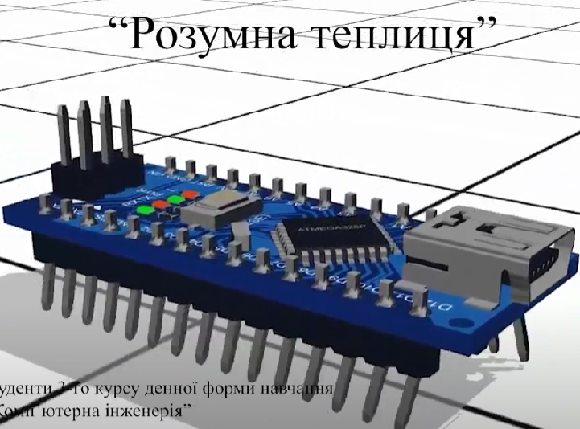
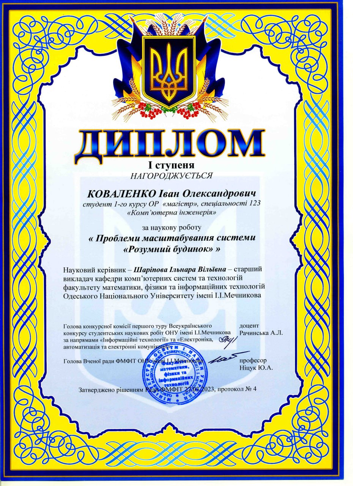
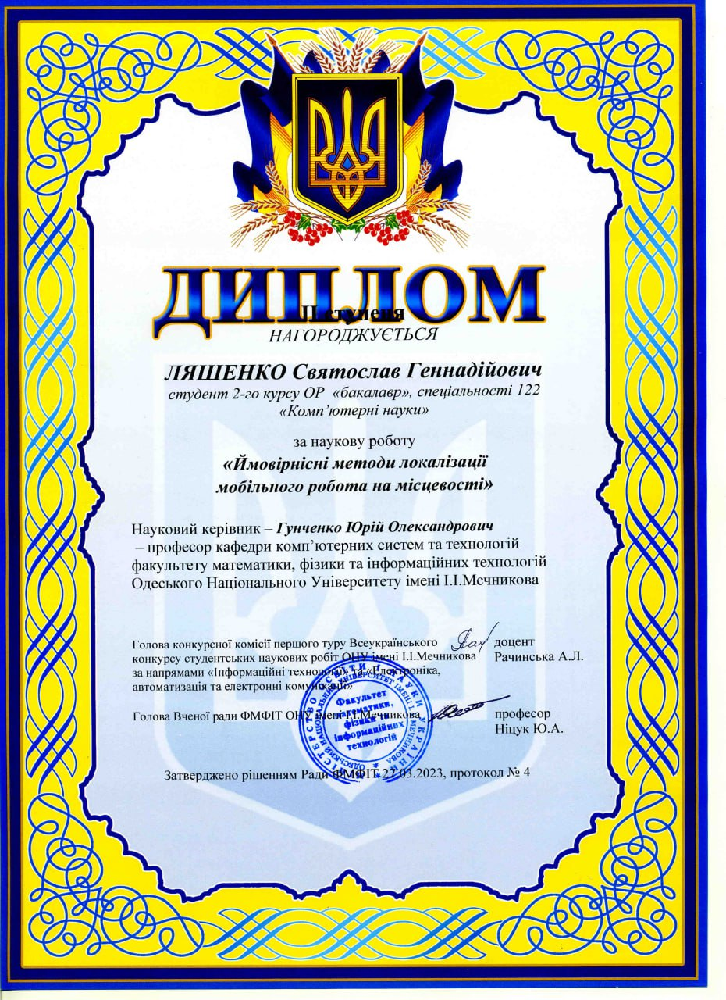
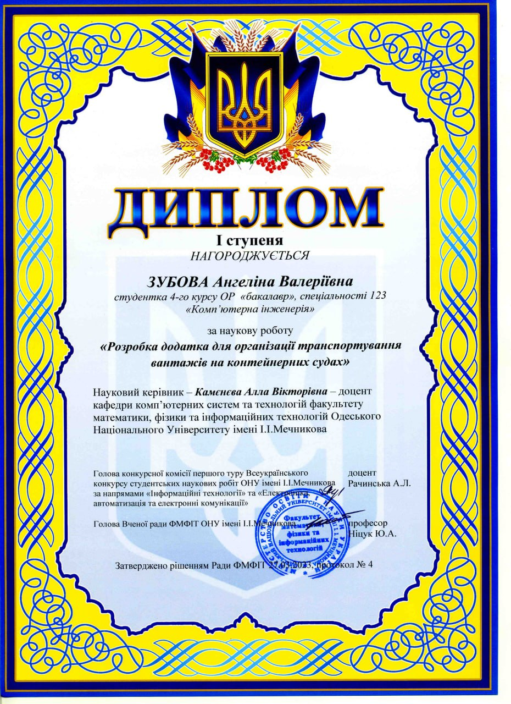
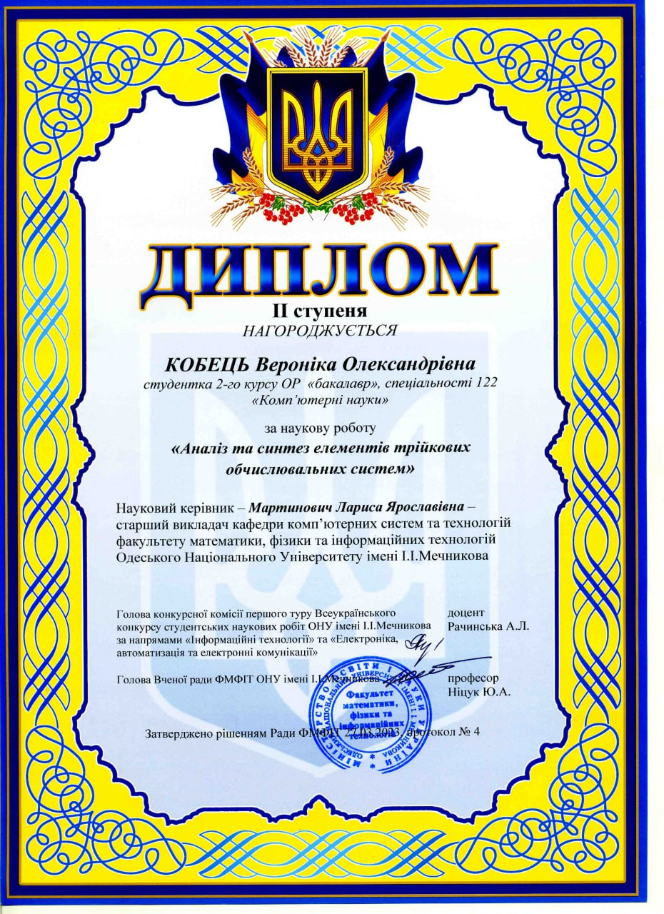

Наші досягнення
Приклади робіт студентів в рамках гуртка «Робототехніки, електроніки та комп’ютерних систем»
Є.Чередніченко та М.Базика - Розумний годинник–метеостанція https://www.youtube.com/watch?v=JCFdXZeQTKg
К.Будат – Розумна теплиця: https://www.youtube.com/watch?v=8gkHHy4NDW4
М.Лісовський – Розумний будинок: https://youtu.be/elnH_ms6qbY
В.Панов - Система аутентифікації на основі RFID-RC522: https://www.youtube.com/watch?v=zjn_BsDgOvI
В.Кивиржік, О.Таранюк - Робот-автомобіль для запобігання перешкодам на Arduino UNO: https://youtube.com/shorts/iVfgJwqA1y8?feature=share, https://youtube.com/shorts/EZronU3we-o?feature=share, https://youtube.com/shorts/TFyD9VhmLYg?feature=share, https://youtube.com/shorts/9EKk6n7ldDk
Т. Єфіменко - Міні-портативна приставка на Arduino UNO R3: https://youtu.be/lqpqiefTr80, https://youtu.be/SgdVwKwfM30, https://youtu.be/lXxJhR_xqBI, https://youtu.be/sCj8auF2jgA,https://youtu.be/Gcp99ow7n40
М.Соценко - Домашня метеостанція з Telegram bot: https://youtu.be/PXhG3T98zi4
Г.Окучинський - Проектування гри в Шахи на Arduino: https://drive.google.com/file/d/1RHvPf8I_ALzTxtQv76o575-J93YMAUdE/view?usp=drive_link
Є. Онуфрейчук - Го та Судоку: Розвага для розуму: youtu.be/g1AgwziUriU Д.Терзі - Чотириголосний синтезатор на Arduino UNO: www.youtube.com/watch?v=7oZIIjS77uQ
О.Тимошенко - Розробка та реалізація гри 'Лавина' на Мікроконтролері Arduino: https://www.youtube.com/watch?v=E8tMcmLJKZU
В.Куліков - Розробка та реалізація гри 'Змійка' на мікроконтролері Arduino https://youtu.be/MZO8foJHS8g
О.Денисенко - Інтегрована система контролю будинку на базі мікроконтролера https://youtu.be/L37YcHiSLNs?si=KJ9tygsI1HN3aPxm
А.Кір’як - Розробка інтерактивної гри 'Динозаврик' на платформі Arduino https://onu.edu.ua/pub/bank/userfiles/files/edu-programm/fmfit/opp-master-123-%D0%9AI-2024.pdf
В.Коба - Автономна система контролю за рослинами - https://www.youtube.com/watch?v=wnn3DkCSYDM
А.Луценко - Розробка автоматизованої системи управління паркуванням із інтеграцією Telegram-бота - https://youtu.be/dYV-WWCgbBc
В.Набока - Інтерактивна система симулятора аркадної гонки - https://youtu.be/3v6Vdq1d7UA
Дипломи студентів
Всеукраїнський конкурс студентських наукових обіт ОНУ імені І.І. Мечникова
Диплом І ступеня. Коваленко Іван Олександрович студент 1-го курсу ОР "магістр", спеціальності 123 "Комп'ютерна інженерія" за наукову роботу "Проблеми масштабування системи Розумний будинок". Наукрвий керівник - ст.викл. Шаріпова Ільнара Вільївна.
Диплом ІI ступеня. Ляшенко Святослав Геннадійович студент 2-го курсу ОР "бакалавр", спеціальності 122 "Комп'ютерні науки" за наукову роботу "Ймовірнісні методи локалізації мобільногоробота на місцевості". Наукрвий керівник - проф. Гунченко Юрій Олександрович.
Диплом І ступеня. Зубова Ангеліна Валеріївна студентка 4-го курсу ОР "бакалавр", спеціальності 123 "Комп'ютерна інженерія" за наукову роботу "Розробка додатка для організації транспортування вантажів на контейнерних судах". Наукрвий керівник - доц. Камєнєва Алла Вікторівна.
Диплом ІІ ступеня. Кобець Вероніка Олександрівна студентка 2-го курсу ОР "бакалавр", спеціальності 122 "Комп'ютерні науки" за наукову роботу "Аналіз та синтех елементів трійкових обчислювальних систем". Наукрвий керівник - ст.викл. Мартинович Лариса Ярославівна.